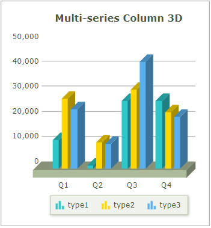
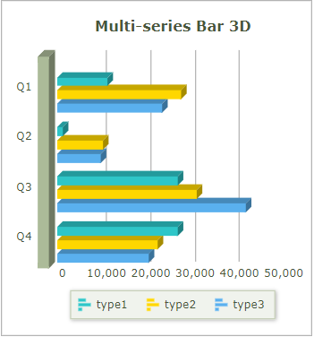

Fusionchart의 'Multi Series' 타입을 확인할 수 있는 예제입니다. 차트의 타입은 함수 'changeType'를 사용하여 스크립트로 변경할 수 있습니다.
FusionChart 가이드 : https://www.fusioncharts.com/dev/fusioncharts
FusionChart의 타입 목록 : https://www.fusioncharts.com/dev/chart-guide/list-of-charts/
스크립트로 'Multi Series' 타입 변경하기
화면에 'Multi Series' 차트 타입이 Radio로 구성되어 있습니다. 항목을 선택(클릭)하면 차트 타입이 변경됩니다.
CASE 1. 'Multi-series Column 2D' 타입
그림 1.브라우저(Chrome) 실행 예시 - 'Multi-series Column 2D' 타입
CASE 2. 'Multi-series Column 3D' 타입
그림 2.브라우저(Chrome) 실행 예시 - 'Multi-series Column 3D' 타입

CASE 3. 'Multi-series Line 2D' 타입
그림 3.브라우저(Chrome) 실행 예시 - 'Multi-series Line 2D' 타입
CASE 4. 'Multi-series Bar 2D' 타입
그림 4.브라우저(Chrome) 실행 예시 - 'Multi-series Bar 2D' 타입
CASE 5. 'Multi-series Bar 3D' 타입
그림 5.브라우저(Chrome) 실행 예시 - 'Multi-series Bar 3D' 타입

CASE 6. 'Overlapped Column 2D' 타입
그림 6.브라우저(Chrome) 실행 예시 - 'Overlapped Column 2D' 타입
CASE 7. 'Overlapped Bar 2D' 타입
그림 7.브라우저(Chrome) 실행 예시 - 'Overlapped Bar 2D' 타입
CASE 8. 'Multi-series Area 2D' 타입
그림 8.브라우저(Chrome) 실행 예시 - 'Multi-series Area 2D' 타입
CASE 9. 'Marimekko' 타입
그림 9.브라우저(Chrome) 실행 예시 - 'Marimekko' 타입
CASE 10. 'Zoom Line' 타입
그림 10.브라우저(Chrome) 실행 예시 - 'Zoom Line' 타입
CASE 11. 'Zoom Line DY' 타입
그림 11.브라우저(Chrome) 실행 예시 - 'Zoom Line DY' 타입
FusionChart의 함수 'changeType'를 사용하여 구현합니다.
스크립트
// 'Multi Series' 타입 변경 예시
// Fusionchart 'cht_exam1'의 차트 타입을 'Multi-series Column 2D'로 변경합니다.
cht_exam1.changeType('mscolumn2d');
// Fusionchart 'cht_exam1'의 차트 타입을 'Multi-series Column 3D'로 변경합니다.
cht_exam1.changeType('mscolumn3d');
// Fusionchart 'cht_exam1'의 차트 타입을 'Multi-series Line 2D'로 변경합니다.
cht_exam1.changeType('msline');
// Fusionchart 'cht_exam1'의 차트 타입을 'Multi-series Bar 2D'로 변경합니다.
cht_exam1.changeType('msbar2d');
// Fusionchart 'cht_exam1'의 차트 타입을 'Multi-series Bar 3D'로 변경합니다.
cht_exam1.changeType('msbar3d');
// Fusionchart 'cht_exam1'의 차트 타입을 'Overlapped Column 2D'로 변경합니다.
cht_exam1.changeType('overlappedcolumn2d');
// Fusionchart 'cht_exam1'의 차트 타입을 'Overlapped Bar 2D'로 변경합니다.
cht_exam1.changeType('overlappedbar2d');
// Fusionchart 'cht_exam1'의 차트 타입을 'Multi-series Area 2D'로 변경합니다.
cht_exam1.changeType('msarea');
// Fusionchart 'cht_exam1'의 차트 타입을 'Marimekko'로 변경합니다.
cht_exam1.changeType('marimekko');
// Fusionchart 'cht_exam1'의 차트 타입을 'Zoom Line'으로 변경합니다.
cht_exam1.changeType('zoomline');
// Fusionchart 'cht_exam1'의 차트 타입을 'Zoom Line DY'로 변경합니다.
cht_exam1.changeType('zoomlinedy');소스 코드 본문
<w2:fusionchart chartType="MSColumn2D" drawType="javascript" id="cht_exam1" labelNode="quarter" ref="data:dlt_chartData_1" seriesColumns="[['type1','type2','type3']]" style="height: 300px;min-width:200px;"> </w2:fusionchart>
DataList 'dlt_chartData_1'의 JSON 유형의 데이터
[
{
"quarter": "Q1",
"type1": "11500",
"type2": "28110",
"type3": "23990"
},
{
"quarter": "Q2",
"type1": "1500",
"type2": "10600",
"type3": "10000"
},
{
"quarter": "Q3",
"type1": "27400",
"type2": "31800",
"type3": "42800"
},
{
"quarter": "Q4",
"type1": "27400",
"type2": "22900",
"type3": "20800"
}
]chartType ( chartType )
setChartAttribute( options )
draw( )
[웹스퀘어5 SP5 개발 가이드] FusionChart
링크 : https://docs1.inswave.com/sp5_user_guide/fd3575622d85d6f9#44b0ca13f66930d7
[웹스퀘어5 SP5 개발 가이드] FusionChart 차트 Customizing
링크 : https://docs1.inswave.com/sp5_user_guide/fd3575622d85d6f9#7d50580dd69b26a9
[FusionChart 개발 가이드] 차트 타입
링크 : https://www.fusioncharts.com/dev/chart-guide/list-of-charts